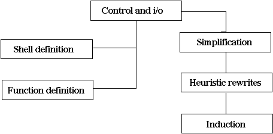

(24) Boyer-Moore Theorem Prover: BMTP
Machine: UNIX machine
Environment: UNIX
Language: SICSTUS Prolog
Source Code: 400 KB
Documents: Manual (English)
Overview
A theorem prover for verifying properties of Lisp programs.
Configuration

Description
Boyer-Moore theorem prover is known as one of the most powerful
automated reasoning systems in the world. The main feature of the
system is as follows:
- Deals with computationally definable objects represented as Lisp
functions.
- Repeatedly tries to rewrite a given formula until it is rewritten
to TRUE or FALSE, using axioms about primitive functions (AND, OR,
NOT, IMPLIES, EQUAL), constructors called shell (ADD1, CONS, etc.),
and user-defined functions as rewrite rules.
- Heuristic rewriting is applied in a sophisticated way.
- Induction is applied using induction schemes which can be derived
mechanically from recursively defined data-types (natural numbers,
list structures, strings, etc.) and recursively defined functions.
This system is a compact version of the prover based on "A
Computational Logic, Academic Press, 1979," and implemented in Prolog.
FTP
- Boyer-Moore Theorem Prover: BMTP [99K]

www-admin@icot.or.jp